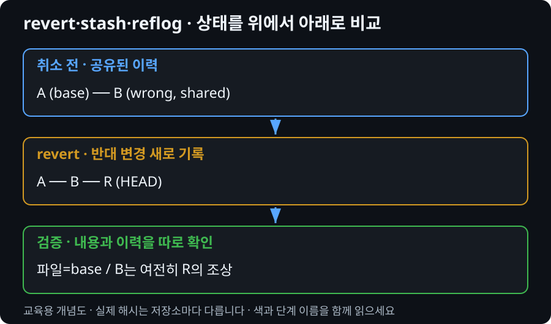

수업 진행 순서: 01 상태 → 02 브랜치 → 03 원격 → 05 PR 협업 → 04 충돌 → 06 장애 대응 → 07 확인. 파일 번호보다 이 순서를 따릅니다.
Git 장애를
상태부터 진단하기
검색한 명령을 바로 실행하지 않고 보존할 변경, 현재 상태, 오류 원문을 기준으로 가장 작은 안전한 조치를 선택합니다.
명령 전에 내부 상태 읽기
restore --staged는 커밋 후보를 바꾸고 작업 파일을 남깁니다. 일반 restore는 작업 파일 내용을 복원합니다. reset의 커밋 지정 형식은 현재 브랜치의 위치를 이동하며 모드에 따라 index와 작업 트리도 바꿉니다. soft가 파일을 남겨도 공유 이력 변경까지 안전한 것은 아닙니다.

장애 대응 원칙
오류를 보면 해결 명령을 검색하기 전에 현재 상태와 보존할 변경을 확인합니다.
- 목표를 한 문장으로 적는다.
- 현재 브랜치와 status를 확인한다.
- 오류 원문을 보존한다.
- 사라지면 안 되는 변경을 표시한다.
- 가장 작은 안전한 조치를 선택한다.
- 조치 후 같은 확인 명령으로 검증한다.
즉시 중단 명령
reset --hard, clean -fd, push --force가 해결책으로 보이면 혼자 실행하지 않고 팀에 상태를 공유합니다.
공통 진단 묶음
git branch --show-current git status git diff git diff --staged git remote -v git branch -vv git log --oneline --graph --decorate --all -12
모든 명령을 무조건 실행하는 것이 아니라 증상에 맞는 최소 명령을 선택합니다.
시나리오 1 — 잘못 stage한 파일
README만 커밋해야 하지만 팀 소개 문서와 .env까지 stage했다고 가정합니다.
진단 계획
현재 화면의 status·diff·log 중 근거를 선택해 말로 설명합니다. 별도 작성이나 제출은 하지 않습니다.
복구 확인 결과
현재 화면의 status·diff·log 중 근거를 선택해 말로 설명합니다. 별도 작성이나 제출은 하지 않습니다.
힌트 1
작업 파일을 버릴 필요가 없습니다. 다음 커밋 대상에서만 제외하는 명령을 MODULE 01에서 찾습니다.
시나리오 2 — 잘못된 브랜치에서 작업
main에서 파일 두 개를 수정했지만 아직 commit하지 않았습니다. 작업은 feature/payment-docs에 있어야 합니다.
- 현재 상태와 변경 파일을 확인합니다.
- 작업을 잃지 않고 새 브랜치로 이동할 계획을 말한 뒤 실행합니다.
- 실행 후 main에는 새 커밋이 없고 feature에 변경이 있는지 확인합니다.
힌트 1
현재 커밋에서 새 브랜치를 만들면 미커밋 변경은 보통 새 브랜치 작업 트리에 그대로 있습니다. 전환 전후 status로 확인합니다.
시나리오 3 — 커밋 후 잘못된 변경 발견
공유된 main의 한 커밋이 README 문장을 잘못 바꿨습니다. 이력은 다른 학생도 이미 받았습니다.
선택
기존 이력을 이동시키는 방법과 반대 변경을 새 커밋으로 만드는 방법 중 팀 저장소에 적합한 쪽을 선택하고 이유를 말합니다.
힌트 1
MODULE 01의 커밋 전 복구와 다릅니다. 이미 공유된 이력을 보존하면서 취소 사실도 남겨야 합니다.
시나리오 4 — pull 후 충돌
오류가 발생한 상태에서 “다시 pull”을 반복하지 않습니다.
| 질문 | 확인 방법 |
|---|---|
| 어느 브랜치인가? | 실제 화면에서 확인하고 선택 이유를 말로 설명 |
| 어느 파일이 충돌했는가? | 실제 화면에서 확인하고 선택 이유를 말로 설명 |
| 양쪽 변경은 무엇인가? | 실제 화면에서 확인하고 선택 이유를 말로 설명 |
| 최종 결과를 누가 결정하는가? | 실제 화면에서 확인하고 선택 이유를 말로 설명 |
시나리오 5 — 비밀정보를 commit
.env 또는 실제 키가 커밋에 포함됐다면 파일 삭제만으로 비밀이 안전해지지 않습니다.
보안 사고 대응
- 더 이상 push하지 않는다.
- 키 또는 비밀번호를 즉시 폐기·교체한다.
- 강사·팀 관리자에게 알린다.
- 저장소 공개 범위와 원격 push 여부를 확인한다.
- 팀 관리자가 이력 정리 필요성을 판단한다.
실습 확인과 Explain Gate
상황 설명만으로 종료하지 않습니다. 9종 재현 환경에서 각 오류를 만들고 진단·복구·검증을 수행하세요.
| 시나리오 | PASS |
|---|---|
| 잘못 stage | 작업 파일 보존, stage만 해제 |
| 잘못된 브랜치 | main 이력 미변경, feature에 작업 보존 |
| 공유 커밋 취소 | 팀 이력 보존 방법 선택 |
| 충돌 | 상태와 합의 없이 반복 명령 금지 |
| 비밀정보 | 폐기·교체와 보고를 파일 삭제보다 먼저 인지 |
도움을 요청할 때
목표, 현재 브랜치, status, 오류 원문과 보존할 작업을 말합니다. 비밀정보는 공유하지 않습니다.
모듈 완료 확인
실제 PASS는 Git 상태와 설명 과정으로 판정합니다.